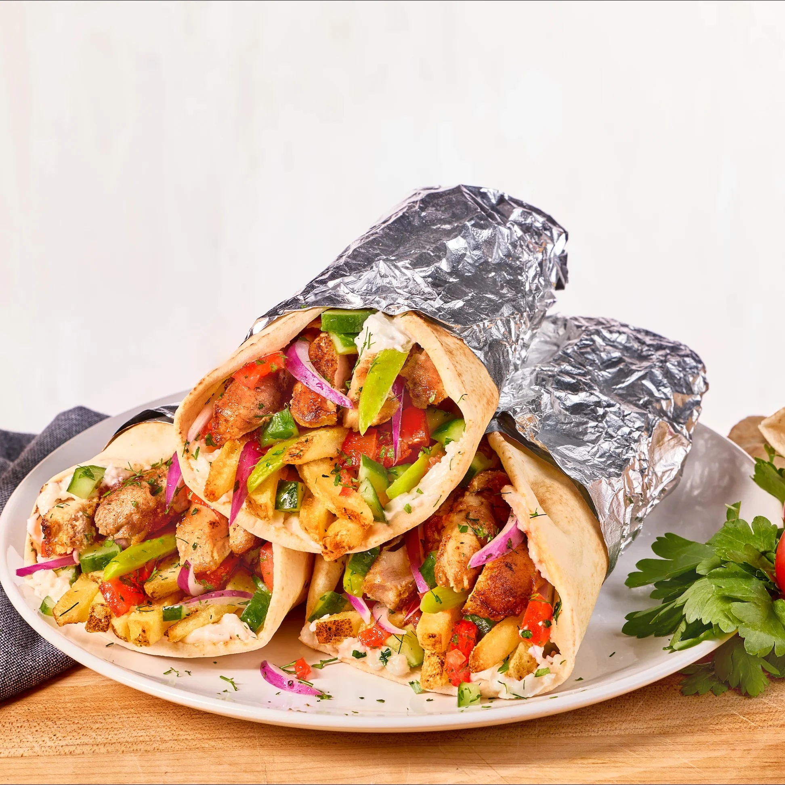

Momo

This is our 30-Minute Homemade Stuffed Crust Pizza recipe that only uses two ingredients for the dough and is so simple to make. We have this at least once a week and change it up with different toppings.
Ingredients
- Chicken thighs
- Shawarma spices
- Onion
- Lemon
- Extra virgin olive oil
- Salt
- Pita pockets, baby arugula, cucumber-tomato salad, tahini or tzatziki sauce
Steps/Instruction
- Mix the shawarma spices. In a small bowl, combine 3/4 tablespoon each of ground cumin, turmeric, coriander, garlic powder, and paprika. Followed by 1/2 teaspoon each of ground cloves and cayenne.
- Prepare the chicken. Pat 8 boneless, skinless chicken thighs dry and season them with salt on both sides. Thinly slice the chicken into small, bite-sized pieces so it cooks evenly.
- Season and marinate. Add the chicken to a large bowl and toss well with the shawarma spice mixture. Add 1 large onion, thinly sliced, the juice from 1 lemon, and 1/3 cup extra virgin olive oil, then toss again until everything is well coated. Cover and refrigerate for 3 hours or overnight. If you don’t have time, skip the marinating step. It will still be delicious.
- Heat the oven. Preheat the oven to 425°F. Take the chicken from the refrigerator and let it sit at room temperature for a few minutes while the oven heats.
- Roast the chicken. Lightly oil a large sheet pan. Spread the chicken and onions in one layer, then roast for about 30 minutes. Because ovens vary, begin checking at 25 minutes. The chicken is ready when it reaches an internal temperature of 165°F measured with a food thermometer.
- Brown the edges, if you like. For deeper browning and crispier edges, move the pan to the top rack and broil very briefly. Stay close! The chicken can go from browned to burned quickly.
- Build the pita pockets. Spread a little tahini or tzatziki inside each pita. Add chicken shawarma, arugula, Mediterranean salad, and pickles or olives. Serve right away.
Recipe Credit: Myriad Recipes by Emily Roz
Go Back